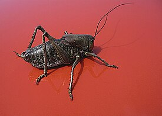

| Anabrus simplex | |
|---|---|
|  | |
| Научная клссификация | |
| Домен: | Эукариоты |
| Царство: | Животные |
| Тип: | Членистоногие |
| Класс: | Насекомые |
| Отряд: | Прямокрылые |
| Семейство: | Настоящие кузнечики |
| Род: | Anabrus |
| Вид: | Anabrus simplex |
| Международное научное название | |
| Anabrus simplex Haldeman, 1852 | |
| Синонимы | |
|
|
Anabrus simplex — вид кузнечиков рода Anabrus из подсемейства Tettigoniinae (Platycleidini, Tettigoniidae). В США известны как мормонские сверчки («Mormon cricket»), но это ошибочное именование, так как настоящие сверчки относятся к семейству Gryllidae. Крупное насекомое (около 4 см), обитающее в западной части Северной Америки на пастбищах с преобладанием полыни и разнотравья. Мормонский сверчок получил название из-за «Чуда с чайками»[англ.] 1848 года, после того как мормонские поселенцы в Юте столкнулись с ним, продвигаясь на запад.
Хотя мормонский сверчок не летает, в фазе роения он может преодолевать до двух километров в день. В это время он может быть серьёзным сельскохозяйственным вредителем и своими массовыми скоплениями иногда представлять опасность для дорожного движения, вызывая ДТП и травмы водителей.
Крупные насекомые (длина 28—45 мм). Anabrus simplex — нелетающие кузнечики, обитающие на американском западе и встречающиеся в одиночных и стайных формах. Одиночные особи составляют все популяции на восточном склоне Скалистых гор и окрашены в коричневый или зелёный цвет, в то время как стайные особи более широко распространены на западе, обычно имеют чёрный цвет и объединяются в разрушительные миграционные группы, которые могут преодолевать до 2 км в день. Их поведение в группах снижает риск хищничества, и они могут встречаться с плотностью более чем в тысячу раз выше, чем в одиночных популяциях.
Взрослые самки откладывают яйца по отдельности в почву на глубину 2—4 см под поверхностью. За всю жизнь самка откладывает до 350 яиц. Молодые нимфы мормонского сверчка вылупляются из перезимовавших яиц в основном весной после их откладки, хотя в некоторых районах на вылупление из яиц может уйти до пяти лет. Отрождение начинается, когда температура почвы достигает 4 °C. Нимфы проходят через семь возрастов, прежде чем достигнут взрослой стадии, что обычно занимает от 60 до 90 дней. Сроки развития сильно различались у разных особей, но, как минимум, эмбрионы заполняли примерно половину яйца за шесть недель, тогда как для достижения последней стадии перед обязательной зимней диапаузой им требовалось 12 недель с момента яйцекладки. Яйца имеют факультативную стадию диапаузы, которая может наступить в самом начале развития. В таком состоянии эмбриональная примордиальная ткань может сохраняться в течение нескольких вегетационных и зимних периодов. Почти полностью развившийся эмбрион находится в стадии облигатной диапаузы, для завершения которой требуется холодный период вернализации. Весной, когда почва прогревается, почти полностью развитые эмбрионы завершают развитие, и из них вылупляются нимфы.
Размножение начинается через 10—14 дней после достижения взрослой стадии. Самец передаёт самке крупный сперматофор, который может составлять до 27 % массы его тела. Сперматофор в основном является пищей для самки, но также содержит сперматозоиды для оплодотворения её яиц. Этот брачный дар заставляет самок роевой фазы конкурировать за самцов, чего не наблюдается у самок одиночной фазы.